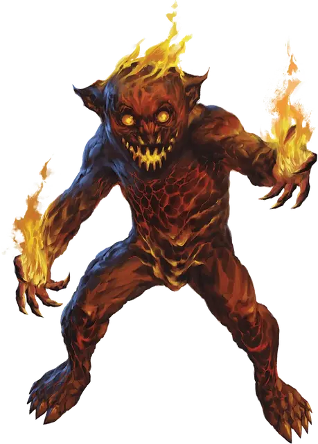

Магмин
Magmin
Маленький Элементаль, хаотично-нейтральный

Класс Доспеха 14 (природный доспех)
Хиты 9 (2к6 + 2)
Скорость 30 футов
| мод | спас | ||
|---|---|---|---|
| СИЛ | 7 | −2 | −2 |
| ЛОВ | 15 | +2 | +2 |
| ТЕЛ | 12 | +1 | +1 |
| мод | спас | ||
|---|---|---|---|
| ИНТ | 8 | −1 | −1 |
| МДР | 11 | +0 | +0 |
| ХАР | 10 | +0 | +0 |
Сопротивление урону дробящий, колющий, рубящий от немагических атак
Иммунитет к урону огонь
Чувства тёмное зрение 60 футов, пассивное Восприятие 10
Языки Игнан
Опасность 1/2 (100 опыта)
Бонус мастерства +2
Особенности
Предсмертная вспышка. Когда магмин умирает, он взрывается огнём и лавой. Все существа в пределах 10 футов от него должны совершить спасбросок Ловкости Сл 11, получая урон огнём 7 (2к6) при провале, или половину этого урона при успехе. Горючие предметы, которые никто не несет и не носит в этой области, воспламеняются.
Свечение от горения. Магмин может бонусным действием вспыхнуть или погасить пламя на себе. Пока магмин горит, он испускает яркий свет в радиусе 10 футов и тусклый свет в пределах ещё 10 футов.
Действия
Касание. Рукопашная атака оружием: +4 к попаданию, досягаемость 5 футов, одна цель. Попадание: Урон огнём 7 (2к6). Если цель — существо или горючий предмет, она воспламеняется. Пока какое-нибудь существо не потушит огонь действием, цель получает урон огнём 3 (1к6) в конце каждого своего хода.
Описание
Магмины — зловредные существа с поганой ухмылкой, похожие на приземистого человека, сделанного из куска чёрной магмы. Даже когда они не горят в полную силу, распространяя вокруг себя жар, словно от большого костра, сквозь их пористую кожу пробиваются небольшие языки пламени.
Призванные пироманы. Магмины — стихийные духи огня, получившие физическое воплощение при помощи магии, поэтому они могут появиться на Материальном Плане только тогда, когда их призывают. Все воспламеняющиеся предметы они воспринимают как потенциальную растопку для грандиозного пожара, и только магический контроль со стороны призвавшего сдерживает их от того, чтобы поджигать все, к чему они прикасаются. Непредсказуемая огненная природа магминов делает их идеальными инструментами для желающих сеять хаос и разрушения. Группа магминов, призванных в стенах замка, может за считанные минуты превратить его в дымящиеся развалины.
Разрушительное пламя. Огонь магминов жарок, но его сдерживает твердый магматический панцирь, не позволяющий мгновенно воспламенять все, что находится поблизости. При этом, подобно пламени, горящему у них внутри, магмины капризны и непредсказуемы. Более того, как довольно примитивные стихийные создания, они могут забывать о том, что их родная стихия может причинять вред существам Материального Плана.
Если призванному магмину представится такая возможность, он постарается забраться туда, где пожарче — они любят лесные пожары и бурлящие озера лавы в жерлах активных вулканов. Если такой возможности нет, магмин будет время от времени неосознанно высвобождать пламя из кончиков своих пальцев, утешаясь хотя бы возможностью что-нибудь поджечь.